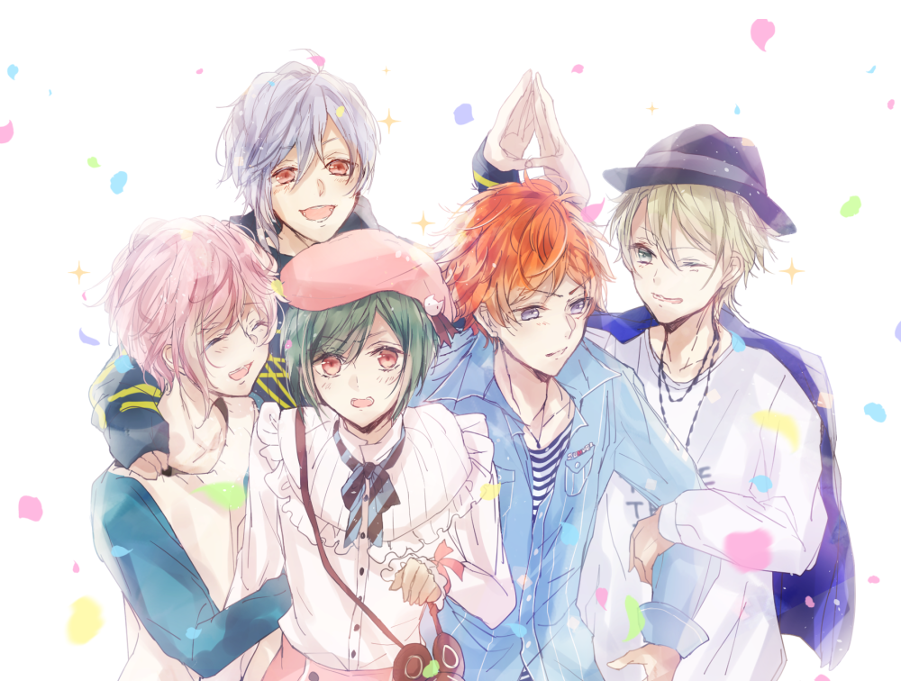

Mi toxica de la musica
Hace 18 años una niña muy hermosa nacio, esa niña no lo sabia pero seria mi esposa
Un dia de enero del 2019 conoci a una niña maravillosa, ella podia hacer y decir cosas que realmente podian llegar mi
Al principio todo era normal, pocas palabras. Realmente en ese entonces no sabia lo que hacia aun con mi vida
Los dias pasaban y culminaban siempre con un bye de la niña maria, ya que por esos dias se dormia por las 10 pm
Fue un proceso bastante lento ahora que lo pienso pero en ese entonces aun no notaba lo que tenia al frente mio, asies, estaba ciego
Despues de un año de hablar ocasionalmente comence a notar otro tipo de cosas en mari y cada vez me gustaba hablarte mas
Ahora que lo pienso siempre nos hablamos de una forma linda y en confianza con conejitos
Paso el tiempo y por alguna razon la niña seguia mis corazoncitos uy y bueno todo lo que yo recuerdo es que siempre nos llevamos bien aunque aveces te hacia dramas
La niña maria era, es y sera una niña amable con el poder cautivar y sumergir a alguien en su mundo. Donde una persona puede sentirse feliz y en paz
Al principio es dificil darse cuenta de esto pero mientras mas te fui conociendo me di cuenta del enorme potencial y calidad de persona que tenia al frente mio
Desde ese momento comence a querer conocerte mas y empezar de 0
Todo fue demasiado raro sinceramente ya que un dia para otro comenzamos a estar mas juntos que nunca, vernos mas y a llamarnos mas
Al inicio como te consideraba una niña genial me gustaba estar contigo y me di cuenta de todo lo que tenias por ofrecer cada vez que te seguia conociendo.
Senti una inmensa curiosidad por conocerte mas y estar contigo para saber mas de ti y ser mas cercanos
Ambos no lo podemos negar. A3 nos unio
aunque el enemigo no me gusta mucho hmp es parte del anime
Realmente este fue el punto de inflexion y el que me hizo decidir que queria tener a mari en mi vida para siempre
Podriamos decir que despues de este momento comence a verte con otros ojos
Yo se... yo se.. Esto ya parece de mi pero nop, solo queria que supieras un poco sobre como lo senti en ese momento
Maria mi niña maravillosa, esto es algo que que debes recordar siempre
Mensaje para mi esposa
Tu cuerpo esta a mi lado
Fragil, dulce y callado
Tu cabeza en mi pecho se conmueve
Con los ojos cerrados
Yo te miro y recuerdo
y acaricio tu pelo, enamorado
Esta mortal ternura con la que callo
te está abrazando a ti mientras yo tengo
inmóviles mis brazos.
Miro mi cuerpo, mi brazo
en que descansa tu cansancio,
tu mirada atrevida y sola
bajo el esmalte de los calidos labios
Te digo susurrando
Cosas que invento a cara rato
Si me pongo triste y solo
Me recargo de energias con un abrazo
Sin hablar me miras
Te escondes en mi pecho mientras ocultas tu llanto
No llores, no sollozes
Calmare tu calvario
Nunca olvides que ...
Yo no busco algo pasajero ni algo del momento, maria es mi niña con la que quiero pasar mucho tiempo
Recuerda maria que los esposos estan para apoyarse y aunque no tengas aun el anillo eso queda como deuda de mi parte
Puedes verlo como una promesa o un sueño, eso no quita el hecho que quiero ser el esposo perfecto
Existe muchas formas de decir lo que uno ama
Nunca olvides mi preciada niña que eres mi bello tesoro, muchos secretos guardas a vista de ojos expertos
Solo un genio podria enamorarse de una mujer tan impresionante
Confia en tu futuro brillante, asi como yo otras personas querran ser parte
El tiempo es solo un numero a tu lado, con el que me has demostrado
Que puedo estar muy orgulloso con lo que vas logrando
Te amo mucho mi ruiseñor
No te alejes mucho de mi lado
y con tu canto
Muestrame ese camino con el que quiero seguir brillando